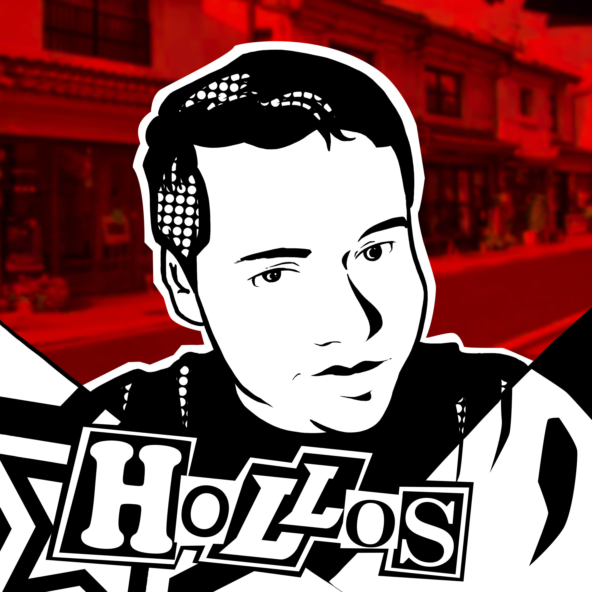

My name is Moises Ramirez, born in Bakersfield California but raised in Fresno California. I am a first generation Mexican American. I consider myself very fortunate to have been raised in this city not only because of the opportunities but because of the myriad of cultures that I get to interact with. I believe that a person can be greatly influenced by their environment. That is why I try to sourround myself with kind, creative, and wise individuals. Those are all aspects that I admire and strive to improve on in my own personal life.
Right out of highschool I knew I wanted to do something creative, hence during city college I decided to take music classes where I learned music theory and practiced playing the euphonium on top of already fulfilling the required general education. When I transferred to State University I dabbled in science and mathematics to satisfy that logical side of me. But I ultimately returned to my creative end where I graduated with a Bachelors in Art. Ultimately nothing makes me happier than thinking critically whilst using my creativity.
The very first place that hired me was McDonalds where I learned to work in a fast paced environment. I prepared food for hundreds of customers daily, cleaned the restaurant from top to bottom, and took customer orders. After that I took a parking position at the Savemart Event Center. There I learned how to interact with customers in a more open environment. Soon after I was able to work as a Substitute Teacher, it was a bit more professional than any of the other jobs that I held. Following lesson plans and maintaining children safety played a more crucial role here. Lastly, I worked for the USPS while COVID was widespread. My job as a sub was gone and I needed to adapt and take on an essential worker job. USPS really tested my physical endurance, while it taught me a lot I much rather decided to take my old job back once the natural disaster diminished.
Project Gallery